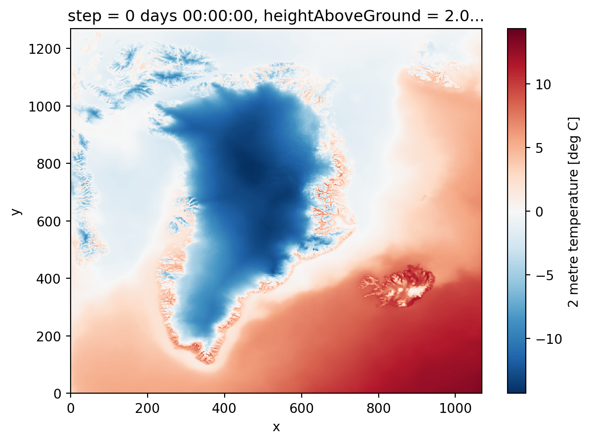
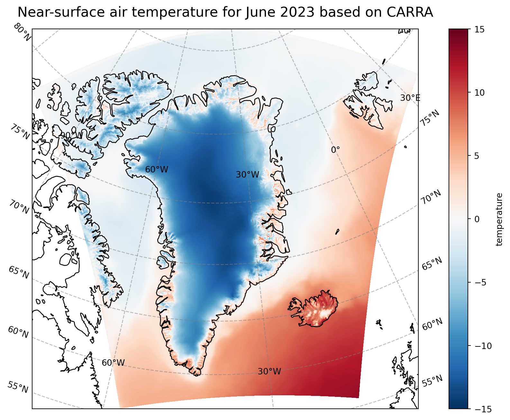

import numpy as np
import xarray as xr
DATADIR = '/ec/res4/scratch/smos/CARRA'
fCARRA = f'{DATADIR}/Raw_data/T2m_an_202306.grb'CARRA tutorial to download and plot data, part II
Overview
Calculate the monthly mean of the downloaded data (downloading done in part I).
Plot data as a map, a simple/fast plotting and one a bit more advanced.
Libraries for working with multidimensional arrays
Import the needed libraries and define data pathes.
Open CARRA data
Open the downloaded CARRA data, which is in GRIB-format, as a dataset in Python. Note that only the data is loaded but also the meta data connected with the data.
CARRA = xr.open_dataset(fCARRA)Ignoring index file '/ec/res4/scratch/smos/CARRA/Raw_data/T2m_an_202306.grb.923a8.idx' older than GRIB fileCompute monthly mean
With the data opened as a dataset there is the option to create a monthly mean easely.
print("Compute the mean")
CARRA_mean = CARRA.mean(dim="time", keep_attrs=True)
print("Done.")Compute the mean
Done.Change longitudes from 0-360 to -180 to +180
That is needed for the plotting.
CARRA_mean = CARRA_mean.assign_coords(longitude=(((CARRA_mean.longitude + 180) % 360) - 180))Create an “Xarray Data Array” from the “Xarray Dataset”
That’s an option for the simple plot option given below. Otherwise it is not needed to switch between “Data Array” and “Dataset”.
CARRA_da = CARRA_mean['t2m']Change unit from K to C and add the unit to the attributes
CARRA_da_C = CARRA_da - 273.15
CARRA_da_C = CARRA_da_C.assign_attrs(CARRA_da.attrs)
CARRA_da_C.attrs['units'] = 'deg C'Simple plot
The data array can be plotted directly with the available plot function. Note that things like the title and the colorbar including the units are set automatically based on the information in the metadata. To save the plot, we import the package “matplotlib”.
CARRA_da_C.plot()
import matplotlib.pyplot as plt
plt.savefig(f'{DATADIR}/Figures/CARRA_west_202306_simple.png')
More advanced plotting with matplotlib and cartopy
With the help of matplotlib and cartopy, we produce a figure on a Lambert conformal projection. More features as for instance the costline are included in the plot, too.
import cartopy.crs as ccrs
print("Start plotting maps")
# create the figure panel and the map using the Cartopy Lambert conformal projection
fig, ax = plt.subplots(1, 1, figsize = (16, 8), subplot_kw={'projection': ccrs.LambertConformal(central_latitude=70.0, central_longitude=-40.0)})
# Plot the data
im = plt.pcolormesh(CARRA_da_C.longitude, CARRA_da_C.latitude, CARRA_da_C, transform = ccrs.PlateCarree(), cmap='RdBu_r', vmin=-15, vmax=15)
# Set the figure title
ax.set_title('Near-surface air temperature for June 2023 based on CARRA', fontsize=16)
ax.coastlines(color='black')
ax.gridlines(draw_labels=True, linewidth=1, color='gray', alpha=0.5, linestyle='--')
# Specify the colourbar
cbar = plt.colorbar(im,fraction=0.05, pad=0.04)
cbar.set_label('temperature')
# Save the figure
fig.savefig(f'{DATADIR}/Figures/CARRA_west_202306.png')Start plotting maps/perm/smos/conda/envs/dataviz/lib/python3.9/site-packages/cartopy/mpl/geoaxes.py:1781: UserWarning: The input coordinates to pcolormesh are interpreted as cell centers, but are not monotonically increasing or decreasing. This may lead to incorrectly calculated cell edges, in which case, please supply explicit cell edges to pcolormesh.
result = super().pcolormesh(*args, **kwargs)